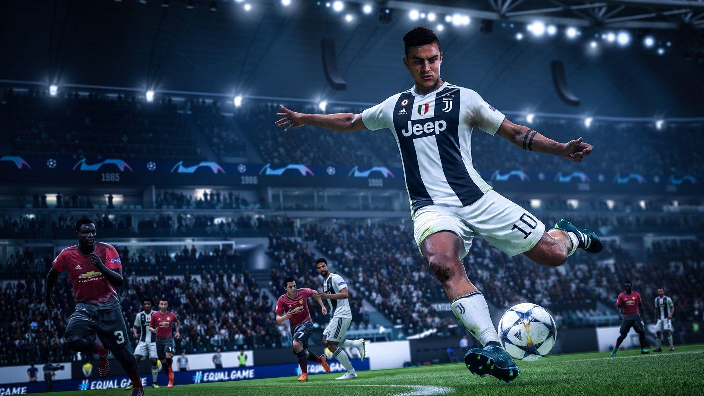

Sports PC games include challenges, both physical and tactical. They account for the player’s commitment, precision, and accuracy. A lot of sports games model the athletic characteristics, including speed, strength, and acceleration. Every sport is held in an arena with boundaries. Sports games category is the only one that gives you goosebumps.
At times, sports games have different modes for different parts of the game. You can find this notion in games, such as the Madden NFL series, where performing a pass play has six other gameplay modes in around 45 seconds. Different free download sports games have a menu, enabling players to select a strategy, whereas they can temporarily suspend the play.
Soccer games change gameplay modes, as the player is off to execute a penalty kick and a free shot at goal. In addition to this, there are some sports games full version, to enable players to change roles between the players and the manager. The sports genre including Cricket, Football, Baseball, Tennis & many more. Unlike other game genres, these switches are more intuitive as engaging, as they develop a habit of real sports in you.
Previous 2D sports games had an unrealistic graphical scale, since athletes are large enough to be visible to the player. The day sports games evolved, players have expected a realistic graphical scale. This download games genre simplifies the game physics for easiness and eliminates factors like a player’s inertia. These games move on with a highly exact time-scale, since they enable athletes to play quick sessions.
Sometimes, sports games for PC treat button-pushes as continuous signals instead of different moves, to initiate and culminate a perpetual action. Soccer games may distinguish between short and long passes, not matter how long you hold a button. Also, golf games start the backswing with only one button-push, and a subsequent push initiates the swing itself.
Types of Sports Games
As there can be no similarity between Football and cycling simulation game, hence we have broken the sports games category into some subcategories like Arcade, Simulation, Management, Multisport and Sports-based fighting. You can download hundreds of sports games from our site for free.